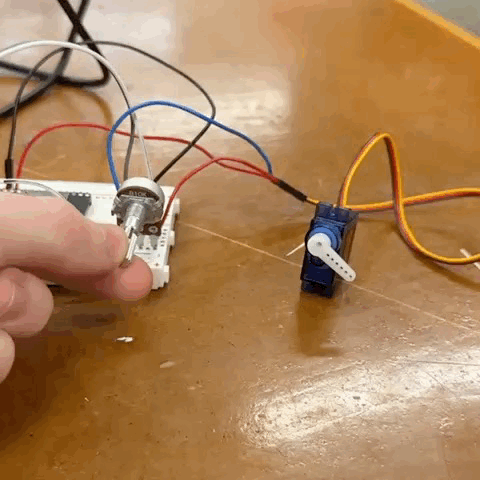
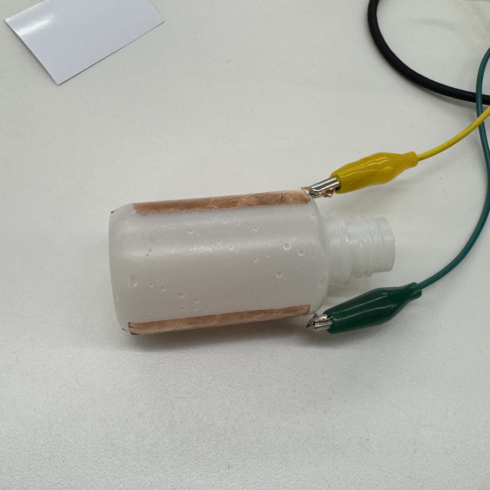
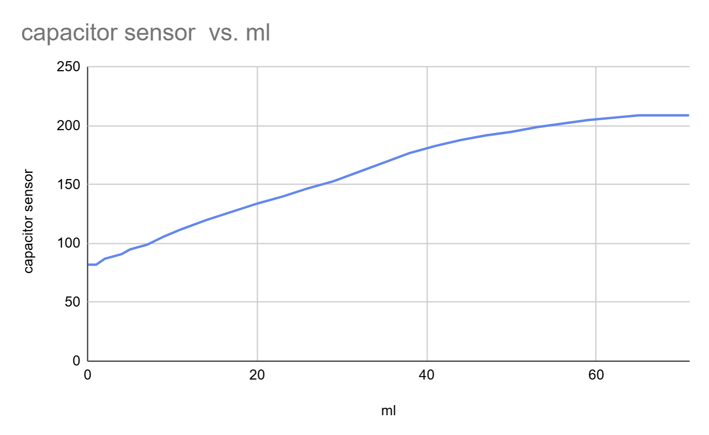
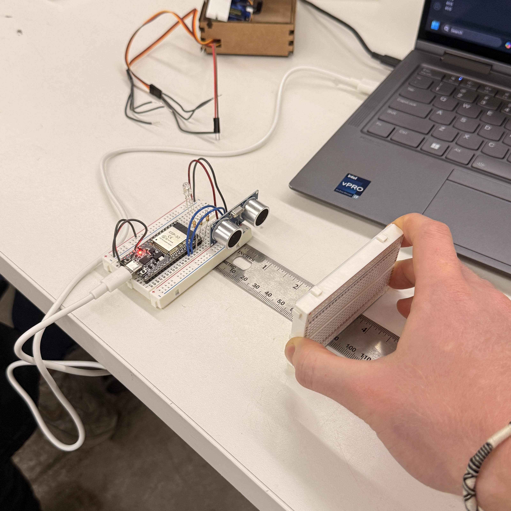
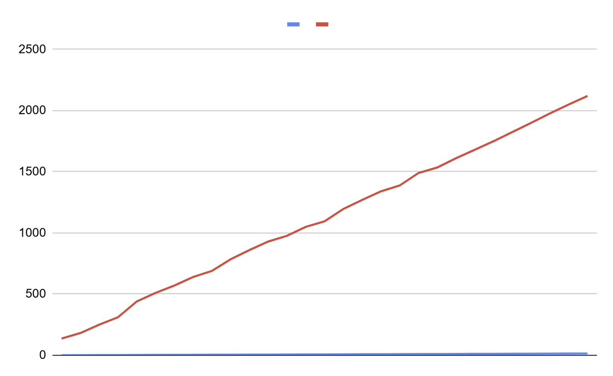
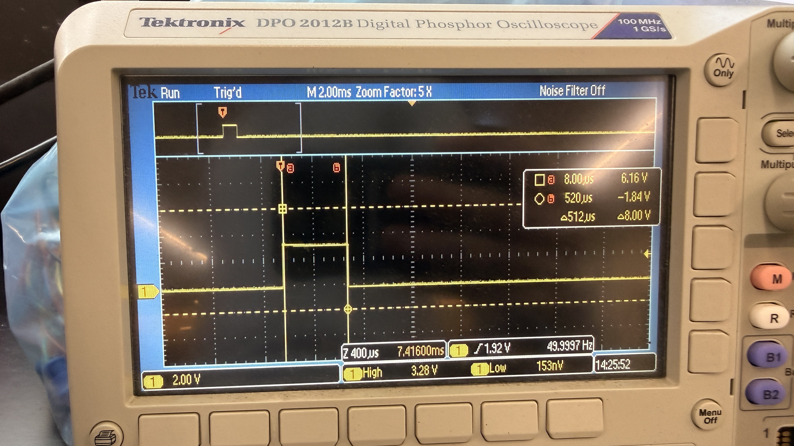
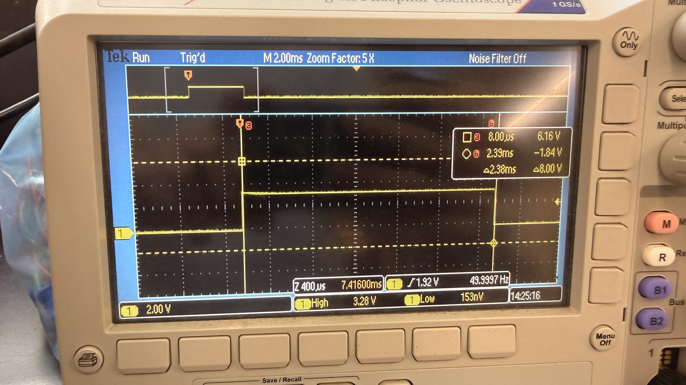

Inputs, custom capacitive sensors, networking, calibration, and pulse frequency + width understanding
Overview
A collection of some of my first microcontroller builds using ESP32 boards. These projects taught me the fundamentals of input, output, best coding practices, and integrating programs with custom hardware beyond simple LEDs and Servos. Since, I have improved my coding abilities with Arduino/C++ and have taken on many more ambitious projects like the Automatic Zen Garden and Water-Filling Table.
Selected Integrations

Input/Output Prototyping
I built a simple input/output device using a servo, potentiometer, and custom-designed lasercut mount from cardboard. By taking the exact position of a potentiometer, I programmed a servo to match the detected angle every 50ms, giving the impression that these two axes are mechanically connected. Future integrations could include steering mechanisms and coordination in mechanically-infeasible areas.


Custom Capacitive Sensor Build and Calibration
I built a capacitive sensor using copper tape and a small bottle. By measuring the change in capacitance between the copper tape and ground I was able to detect when more water was added to the bottle. I calibrated this custom sensor by plotting the capacitance values against the water in the bottle (increments of 3ml) and found the above correlation. There is a linear relationship between water amount and capacitance with a plateau effect at 209 capacitance since the water surpasses the level of the sensor at that point.
Networking
I learned how to use networking to receive inputs and execute outputs through a locally hosted WIFI network and broadcasted HTML site. Through this simple project with just a servo, I setup the ESP32 board to initially search for a specified network, and if unable to connect, create a WebSocket that allows for bidirectional communication so the user can use any WIFI-enabled device to control a servo.


Ultrasonic Sensor Calibration
I tested and calibrated an ultrasonic distance sensor by measuring the distance from the sensor to a flat object in increments of 1 inch from 1 to 15 inches. I found that the sensor's readings were extremely linear, showing that there is a constant relationship between the actual distance and the sensor's reading so long as an object is directly in front of the sensor. Future implementations could include parameterized output, for example, an LED could show different colors based on the distance of objects from the sensor.


Oscilloscope Output of Servo Understanding
While there are libraries like ESP32-Servo that handle numerical code into physical servo movement, how is that change communicated to the servos themselves? By connecting my microcontroller to an oscilloscope, I can read the pulse of voltage passing through the control wire, noting its width and frequency; with this information I can understand that at 0 degrees (left) the pulse is much narrower at 0.5ms and at 180 degrees (right), the pulse is nearly 5x wider at 2.4ms.